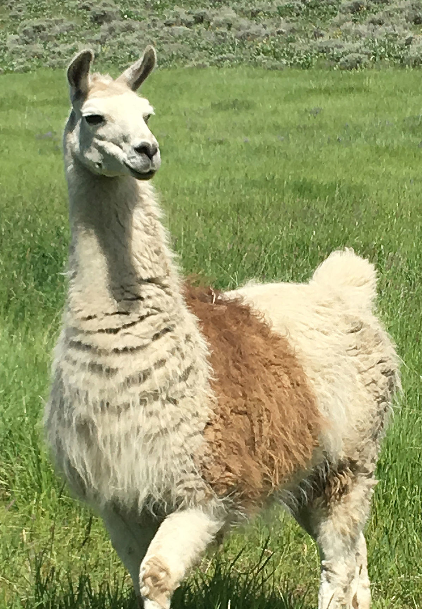
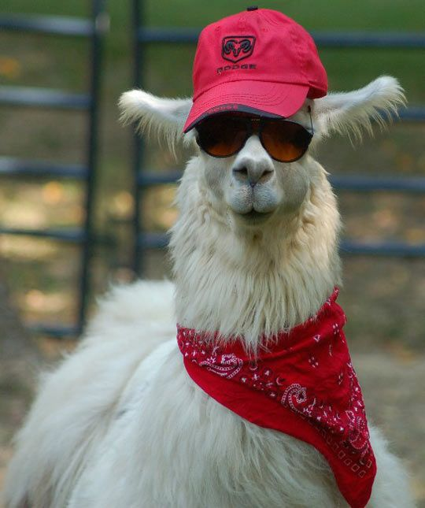
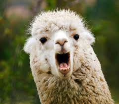

Welcome to my first website
Meeting the Creator
Hi, my name is Starla. I'm a freshman in high school. I'm making this website for my computer science class.
This is my first time taking a computer science class (2019-2020 School Year) making this obviously the first website I've made.
I've made a website before off of google sites for a science class, but I don't really count that, sense everything was kinda given to you.
Let's me think. The boring uninteresting school information is that my classes consist of mandatory classes (math, science, english, history), but my 'fun' classes are
sign language, computer science, and yearbook. I really want to be a teacher, mostly either a special ed teacher or math teacher.
I really enjoy math and I'm pretty good at it too. I'm a freshman who is taking an Algebra 2 class, which is for juniors.
Favorites
Color: Purple
Animal: Llama
Class: Math or yearbook
Book: One Small Thing by Erin Watts, One of us is Lying by Karen M. McManus, If He Had Been with Me by Laura Nowlin, Before I Fall by Lauren Oliver, or If I Stay by Gayle Forman (I like reading)
Movie: Lilo and Stitch (I'm not very sure)
TV Show: Probably Pretty Little Liars
Candy: Anything chocolate really
Food: Cheeseburgers
Spirit Animal
In the photo I have chosen a llama. It seems a little random to have put a picture of a llama, but I'm going with it as my spirit animal.
I love llamas and even though a quiz online told me my real spirit animal is an owl I'm just going with a llama.
The main reason I chose a llama is because they are the best animal. The also are really cool and adorable.
If you were to research a llama you could see that they symbolize a few different things. One being perseverance.
Personally, I believe that I persevere through a lot just like llamas. They also symbolize success and I think I am pretty successful when it comes to stuff like school. Sometimes.


